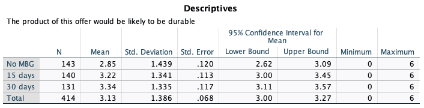
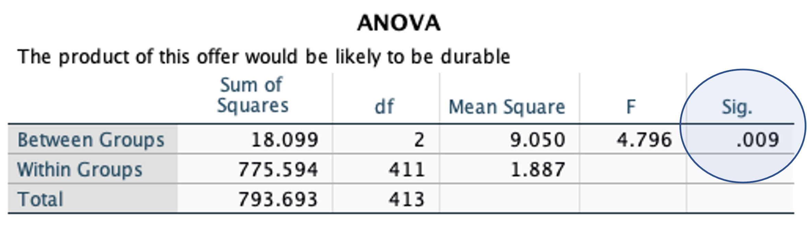
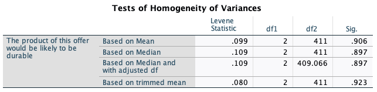
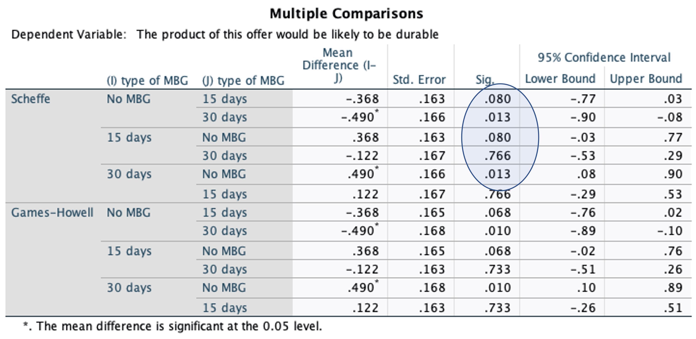

4 ANOVA and Experimentation
Data: MBGshort.sav (available on Moodle)
4.1 Learning objectives
The aim of this lab is to help you to use SPSS to analyze data from an experimentation. Specifically, we want to examine mean differences across three experimental groups (one-way ANOVA design).
Learning objectives: At the end of this lab, we hope that you will be able to
Analyze data from a one-way ANOVA (Analysis of Variance) experiment.
Produce and interpret basic SPSS outputs from a two-way ANOVA experiment.
In this lab, we are going to look at how one-way ANOVA can be used to extend the two independent samples T test to look for means differences across three or more groups and secondly to show how data resulted from manipulation of more than one factor can be analyzed by extending one-way ANOVA method. For instance, to look at how types of return condition facilitated by money-back guarantees (MBG for short) (No MBG, 15 days, 30 days) and types of product (search vs. experience product) influence perceived product quality. We focus our attention to between-subject ANOVA designs where each respondent is randomly assigned to one of the experimental conditions.
4.2 Mean Differences Across Three or More Groups
One-way ANOVA can also be used to explore differences in a variable across three or more groups. This is more useful than the two independent sample T test simply because it can be used for more groups and can tell us where the location of the differences. For instance you might find significant mean differences on perceived product quality across three groups (e.g., No MBG, 15 days, and 30 days) and to be more specific, the 15 days and 30 days group do not differ. But perceived product quality of participants in the No MBG group is different than those in the 15 days and 30 days group.
In this part, we are going to use the data collected by a former Advanced Marketing Management student at Lancaster University for his dissertation about the effect of MBG on perceived durability of a product. He created an experiment by devising three different scenarios where each scenarios contains information about each of MBG conditions (No MBG, 15 days, 30 days). Respondents were randomly assigned to read one of three different questionnaires. In each questionnaire, he put an image of a product (he chose a laptop) and information about the MBG condition. Other information across different questionnaires was kept similar (e.g., product specification, laptop price, etc).

Let us explore if the difference exist in the perceived product durability across the three groups MBG. We will use quality5 (i.e., ‘the product of this offer would be likely to be durable’) as the dependent variable.
To conduct an ANOVA, use the menu options Analyze\(\rightarrow\)Compare means\(\rightarrow\)One-way ANOVA. Click Options then tick Descriptive. You can also tick Options\(\rightarrow\)means plot to display a graph that shows the means of the three groups Click Continue then OK. The dependent variable is quality5 (i.e., ‘the product of this offer would be likely to be durable’). The factor is tMBG.
In the output window the SPSS produces the Descriptive table and ANOVA table.


The ANOVA table reveals that perceived product durability differ across the experimental groups because the sig-value is less than 5%. The descriptive table gives an indication of why the differences exist. No MBG group has a lower mean compared the 15-days and 30-days group. The 15-days and 30-days groups are similar. However, you need to do additional test to get more details about the differences. Let’s try again putting some important options.
4.3 Homogeneity of Variance and Post-Hoc Tests
4.3.1 Homogeneity of Variance Test
Repeat the analysis above and click the Options tab. Check on Options and tick Homogeneity of Variance test. To determine which of the three groups differ, you can do what is called a Post Hoct test - click Post Hoc. There are many tests available. Among many options, check Scheffe for situation where Equal Variances Assumed; check Games-Howell under Equal Variances Not Assumed.
Homogeneity variances test determines whether you would use Scheffe or Games-Howell test. You use this rule:
If sig-value < 0.05, use Games and Howell, otherwise use Scheffe

The sig-value of the homogeneity of variance test is 0.906, therefore you focus on the outputs of the Scheffe test in the next table. Let us interpret the results of the Scheffe test.
4.3.2 Post Hoc Test
In the SPSS outputs, you have the following table

You can see from the above table that No MBG is not statistically different from 15 days (p = 0.08) and 15 days is not statistically different from the 30 days (p = 0.766). But no MBG has a statistical difference with the 30 days (p = 0.013) (the p-value between No MBG and 15 days are close to significant, if sample size is large, it would be likely to be significant). The next output from the Scheffe test below clarifies the difference.